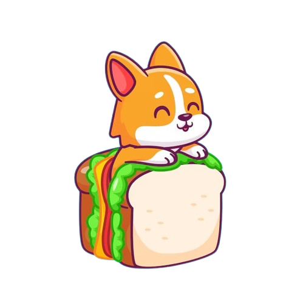
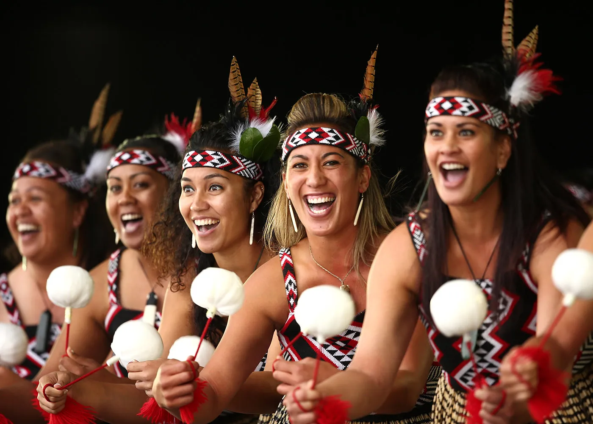
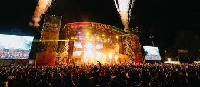
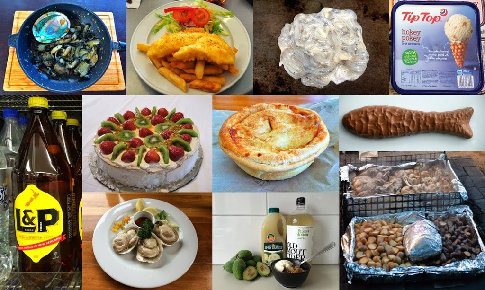
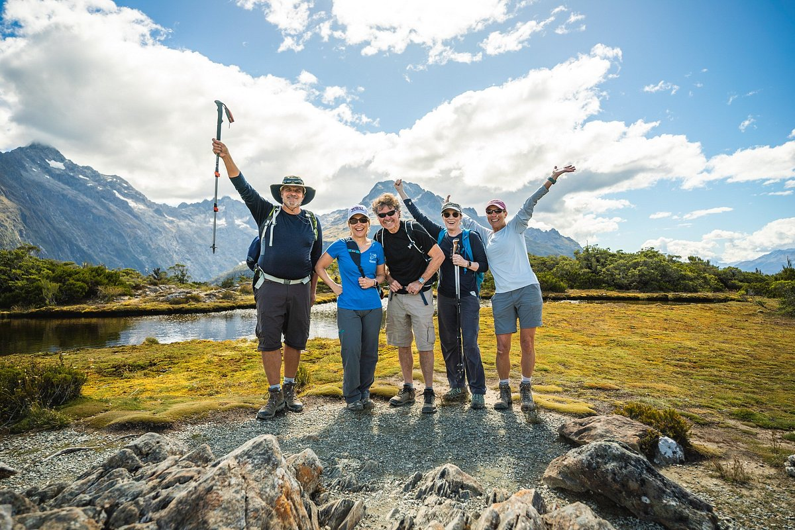

New Zealand


AR/VR
New Zealand embraces both Maori traditions and Western lifestyles. The Maori haka, tattoos, and legends play a vital cultural role.
Events like Waitangi Day and Matariki (Maori New Year) celebrate national identity. Cultural festivals and rugby matches are significant gatherings.
New Zealand is known for lamb, seafood, and the traditional Maori hangi. The country's wine and coffee culture are also popular.
Nature is deeply ingrained in the Kiwi lifestyle. From mountains to beaches, outdoor adventure is a cultural norm.
 ← Back to Home